舊鐵橋＋香草園＋院長的熱情＋快樂的同伴＋悠閒的假日
＝夫復何求……
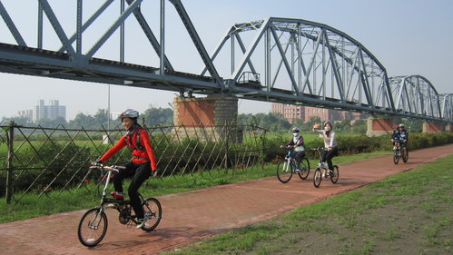
前往鄰近高雄市的好山好水之鄉－－大樹區悠遊...........
從宿舍出發.... ...果真是全副武裝喔～堅強陣容～8：00
...果真是全副武裝喔～堅強陣容～8：00
舊鐵橋：早期聯繫高屏之間的重要橋樑，功成身退後蛻變為美麗的濕地園區。
舊鐵橋共有兩條，1條仍有火車繼續行駛、另1條純為觀光價值；
園區內遍布自行車步道，也有咖啡、餐飲、租車、導覽行程等服務，既安全又自在；
9：10
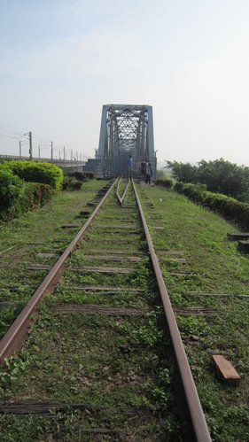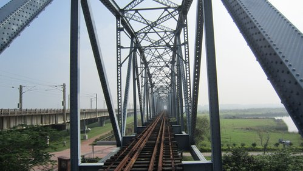
超經典代表作～
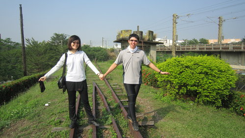
十年後 十年前
這就是青春洋溢喔

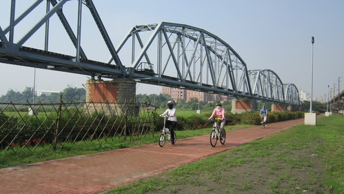
舊鐵橋園區旁就是近百年歷史的三和瓦窯設立的工作室，
有小小展示間、可DIY自己的圖案、作品（OS..下次來做河東獅LOGO）。
10：20
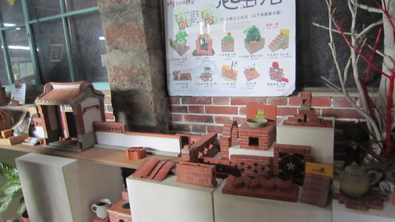
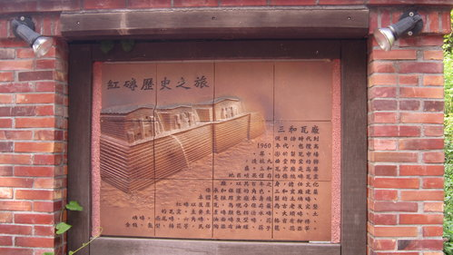
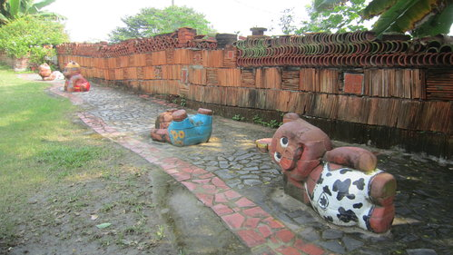
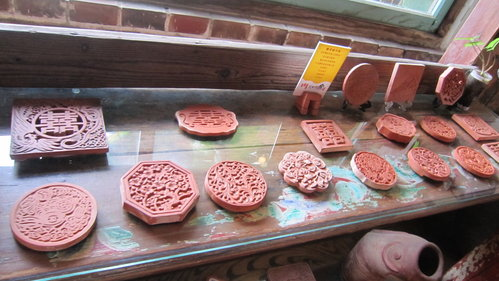
另安排前往三和瓦窯燒窯場實地導覽，這裡充滿古樸之美，也很有趣喔！
各式窯洞介紹：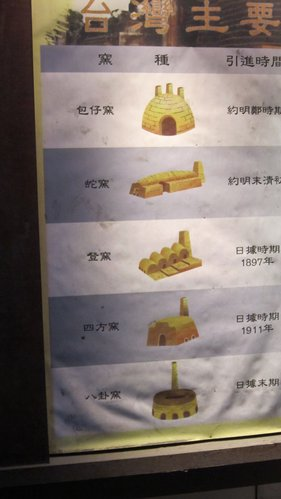
百年包仔窯洞～～仍在運作中～～一年至多燒兩次
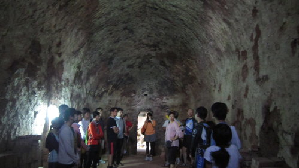
燒製前：
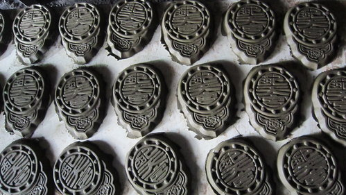
宗興即時請大家吃冰棒－－CP值超高
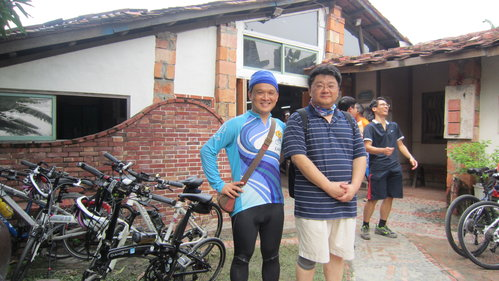
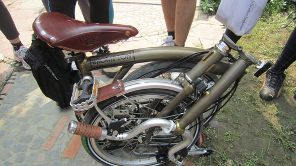
英式風格限量真皮座椅雅痞風高檔小折.......擁有者必須很優雅的展示
方能與之匹配喔！
來到雅植香草園：找一下，其中有數根柱子是院長貢獻的；
這裡有芬芳而美麗的香草植栽，非常有特色。
去了就知道院長為何會淪陷…哈哈^^
11：30
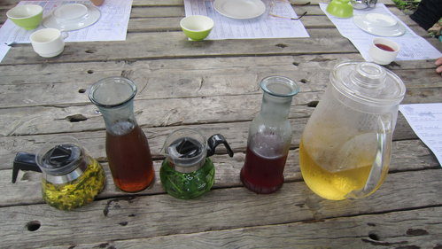
 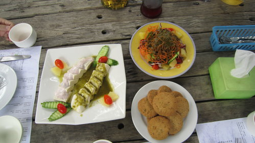
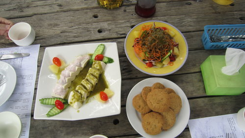
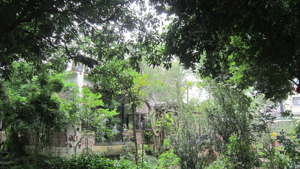
園區內充滿歐式香草味....
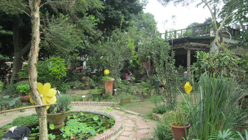
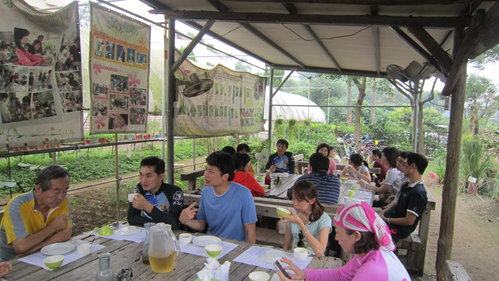

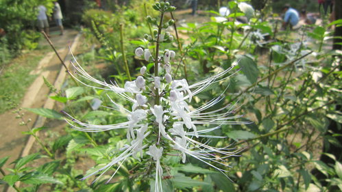
卡司夠強了吧！
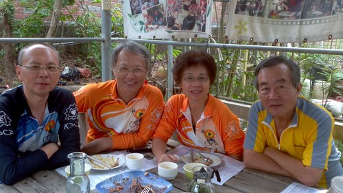
別在老婆面前和別人做小動作....
看，立刻被槍斃了吧..！